library(openxlsx)
# write.xlsx(df_reg, "df_reg.xlsx")
library(readxl)
df_reg <- read_excel("df_reg_chuan.xlsx")FIGURE_10_GESTATION
EXPORT EXCEL
MECONIUM
df_reg_meconium <- df_reg[ , c(1,2,11,7:10)]
library(tidyr)
df_long <- tidyr:::pivot_longer(df_reg_meconium,
cols = c(4:7),
names_to = "SCFA",
values_to = "value")
df_long <- as.data.frame(df_long)
df_long <- na.omit(df_long)
df_long -> df_long_oriREMOVE OUTLIER
options(scipen = 999)
unique(df_long$SCFA) -> vec_SCFA
df_term_ls <- list()
for(i in 1:length(vec_SCFA)){
df_out_1 <- df_long |> subset(SCFA == vec_SCFA[i] & Termness == "term")
df_out_1 <- df_out_1 |> subset(value != 0)
a <- boxplot(df_out_1$value)
df_out_1 <- df_out_1[ which(!(df_out_1$value %in% a$out)) , ]
df_term_ls[[i]] <- df_out_1
}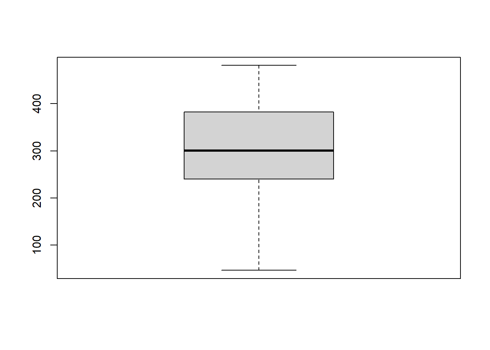
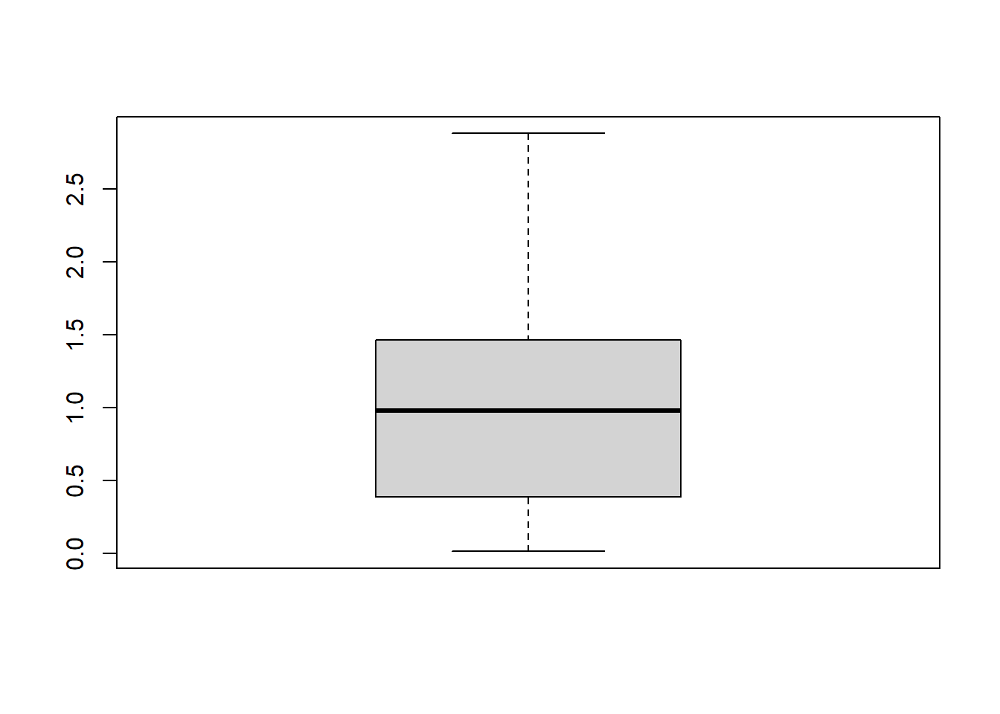
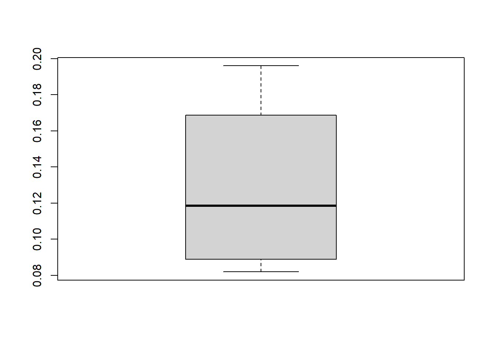
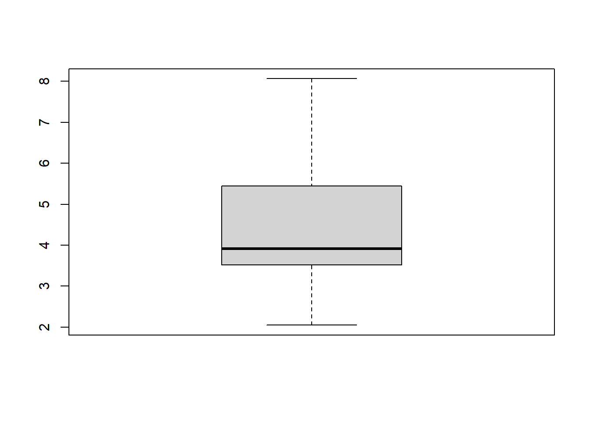
df_term_ls_final <- do.call(rbind, df_term_ls)df_preterm_ls <- list()
for(i in 1:length(vec_SCFA)){
df_out_1 <- df_long |> subset(SCFA == vec_SCFA[i] & Termness == "preterm")
df_out_1 <- df_out_1 |> subset(value != 0)
a <- boxplot(df_out_1$value)
df_out_1 <- df_out_1[ which(!(df_out_1$value %in% a$out)) , ]
df_preterm_ls[[i]] <- df_out_1
print(a$out)
}[1] 3834.5164 670.5961 1139.7853 688.4041 3755.1979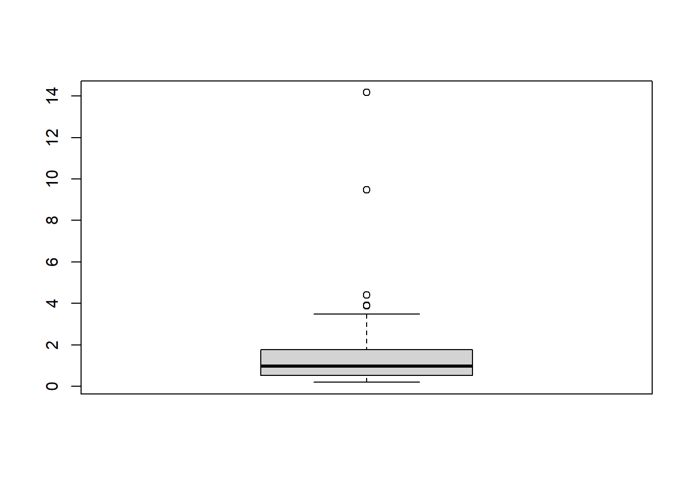
[1] 4.393309 9.470611 3.876182 14.165077 3.907699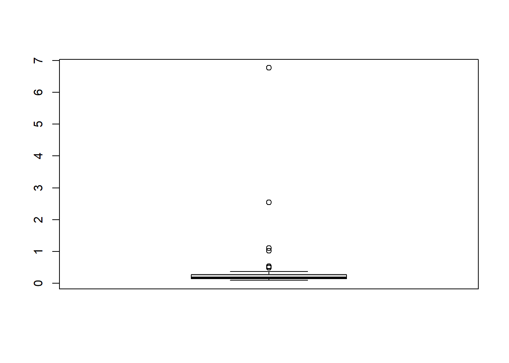
[1] 0.5302340 2.5468646 1.1059147 6.7652350 0.4844066 0.5354271 1.0193065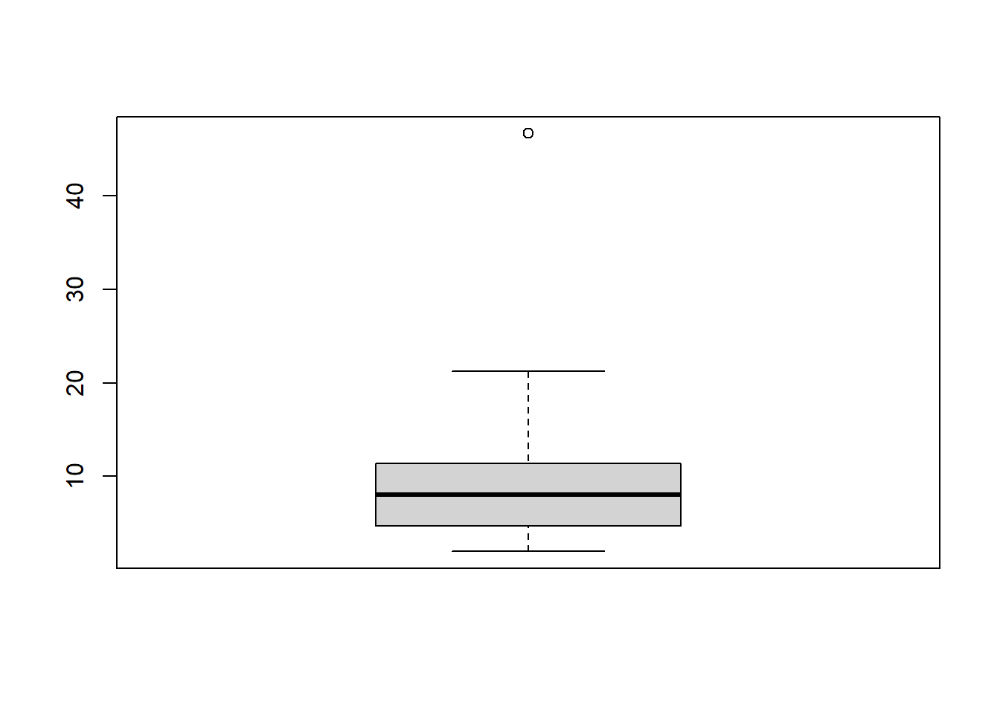
[1] 46.61438df_preterm_ls_final <- do.call(rbind, df_preterm_ls)df_long <- rbind(df_term_ls_final, df_preterm_ls_final)
dim(df_long)[1] 206 5dim(df_long_ori)[1] 252 5df_long$value <- log(df_long$value+0.001)
gsub(pattern = "_meconium",
replacement = "",
df_long$SCFA) -> df_long$SCFAfit_acetate <- lm(acetate_meconium ~ Gestation,
data = df_reg_meconium)
summary(fit_acetate)
Call:
lm(formula = acetate_meconium ~ Gestation, data = df_reg_meconium)
Residuals:
Min 1Q Median 3Q Max
-467.8 -247.2 -116.2 19.0 3366.7
Coefficients:
Estimate Std. Error t value Pr(>|t|)
(Intercept) 985.89 573.05 1.720 0.0904 .
Gestation -17.27 16.99 -1.017 0.3133
---
Signif. codes: 0 '***' 0.001 '**' 0.01 '*' 0.05 '.' 0.1 ' ' 1
Residual standard error: 640.8 on 61 degrees of freedom
(25 observations deleted due to missingness)
Multiple R-squared: 0.01666, Adjusted R-squared: 0.0005416
F-statistic: 1.034 on 1 and 61 DF, p-value: 0.3133fit_propionate <- lm(propionate_meconium ~ Gestation,
data = df_reg_meconium)
summary(fit_propionate)
Call:
lm(formula = propionate_meconium ~ Gestation, data = df_reg_meconium)
Residuals:
Min 1Q Median 3Q Max
-1.8985 -1.0949 -0.3887 0.1089 12.4655
Coefficients:
Estimate Std. Error t value Pr(>|t|)
(Intercept) 3.68894 1.96175 1.88 0.0648 .
Gestation -0.06631 0.05815 -1.14 0.2586
---
Signif. codes: 0 '***' 0.001 '**' 0.01 '*' 0.05 '.' 0.1 ' ' 1
Residual standard error: 2.194 on 61 degrees of freedom
(25 observations deleted due to missingness)
Multiple R-squared: 0.02087, Adjusted R-squared: 0.004819
F-statistic: 1.3 on 1 and 61 DF, p-value: 0.2586fit_isobutyrate <- lm(isobutyrate_meconium ~ Gestation,
data = df_reg_meconium)
summary(fit_isobutyrate)
Call:
lm(formula = isobutyrate_meconium ~ Gestation, data = df_reg_meconium)
Residuals:
Min 1Q Median 3Q Max
-0.5481 -0.2764 -0.1183 -0.0401 6.3344
Coefficients:
Estimate Std. Error t value Pr(>|t|)
(Intercept) 1.60317 0.79888 2.007 0.0492 *
Gestation -0.03908 0.02368 -1.650 0.1041
---
Signif. codes: 0 '***' 0.001 '**' 0.01 '*' 0.05 '.' 0.1 ' ' 1
Residual standard error: 0.8934 on 61 degrees of freedom
(25 observations deleted due to missingness)
Multiple R-squared: 0.04273, Adjusted R-squared: 0.02703
F-statistic: 2.723 on 1 and 61 DF, p-value: 0.1041fit_butyrate <- lm(butyrate_meconium ~ Gestation,
data = df_reg_meconium)
summary(fit_butyrate)
Call:
lm(formula = butyrate_meconium ~ Gestation, data = df_reg_meconium)
Residuals:
Min 1Q Median 3Q Max
-7.290 -2.673 -0.684 1.270 36.679
Coefficients:
Estimate Std. Error t value Pr(>|t|)
(Intercept) 23.1092 5.2881 4.370 0.0000491 ***
Gestation -0.4705 0.1568 -3.001 0.00389 **
---
Signif. codes: 0 '***' 0.001 '**' 0.01 '*' 0.05 '.' 0.1 ' ' 1
Residual standard error: 5.914 on 61 degrees of freedom
(25 observations deleted due to missingness)
Multiple R-squared: 0.1287, Adjusted R-squared: 0.1144
F-statistic: 9.008 on 1 and 61 DF, p-value: 0.003892library(ggplot2)
ggplot(data = df_long,
mapping = aes(x = Gestation,
y = value)) +
geom_point(alpha = 0.5) +
geom_smooth(method = "lm") +
facet_wrap(~ SCFA,
scale = "free") +
theme_bw(base_size = 16) +
theme(legend.position = "none") +
labs(x = "Gestation (week)",
y = "log \u03bcM/g",
title = "Meconium") +
coord_cartesian(clip = "off")`geom_smooth()` using formula = 'y ~ x'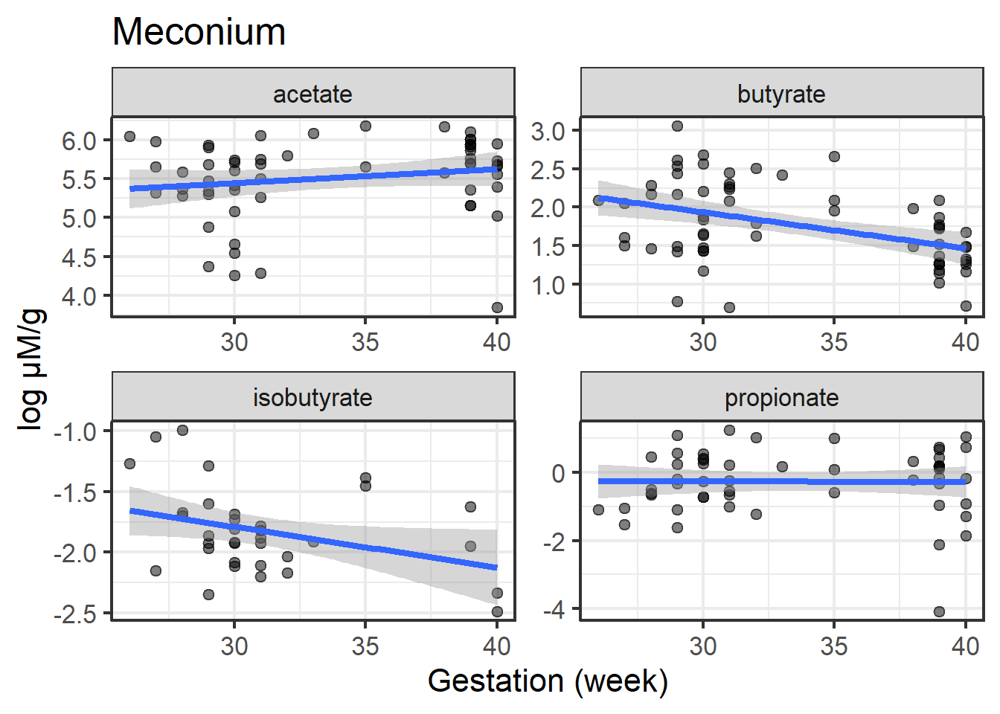
ggsave(filename = "FIGURE_10_GESTATION_MECONIUM.svg",
width = 8,
height = 6,
dpi = 300,
units = "in")`geom_smooth()` using formula = 'y ~ x'STOOL
df_reg_stool <- df_reg[ , c(1,2,11,3:6)]
library(tidyr)
df_long <- tidyr:::pivot_longer(df_reg_stool,
cols = c(4:7),
names_to = "SCFA",
values_to = "value")
df_long <- as.data.frame(df_long)
df_long <- na.omit(df_long)REMOVE OUTLIER
options(scipen = 999)
unique(df_long$SCFA) -> vec_SCFA
df_term_ls <- list()
for(i in 1:length(vec_SCFA)){
df_out_1 <- df_long |> subset(SCFA == vec_SCFA[i] & Termness == "term")
df_out_1 <- df_out_1 |> subset(value != 0)
a <- boxplot(df_out_1$value)
df_out_1 <- df_out_1[ which(!(df_out_1$value %in% a$out)) , ]
df_term_ls[[i]] <- df_out_1
}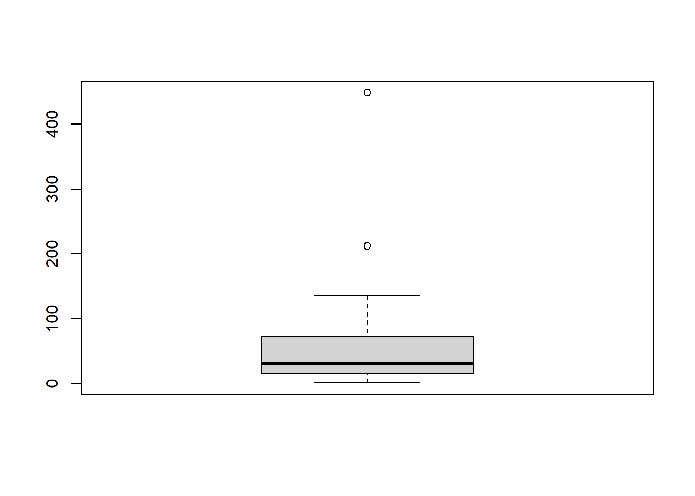
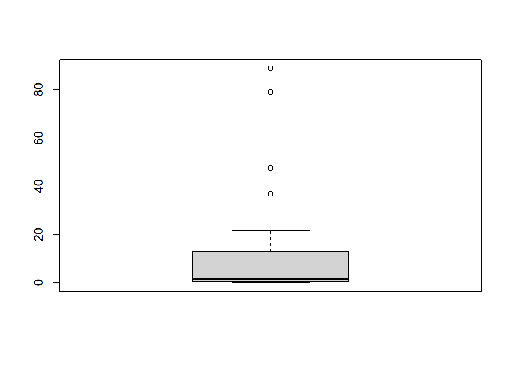
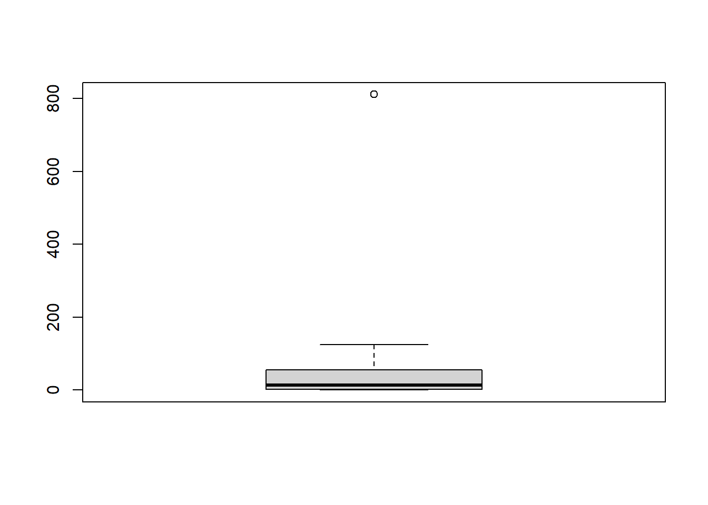
df_term_ls_final <- do.call(rbind, df_term_ls)df_preterm_ls <- list()
for(i in 1:length(vec_SCFA)){
df_out_1 <- df_long |> subset(SCFA == vec_SCFA[i] & Termness == "preterm")
df_out_1 <- df_out_1 |> subset(value != 0)
a <- boxplot(df_out_1$value)
df_out_1 <- df_out_1[ which(!(df_out_1$value %in% a$out)) , ]
df_preterm_ls[[i]] <- df_out_1
print(a$out)
}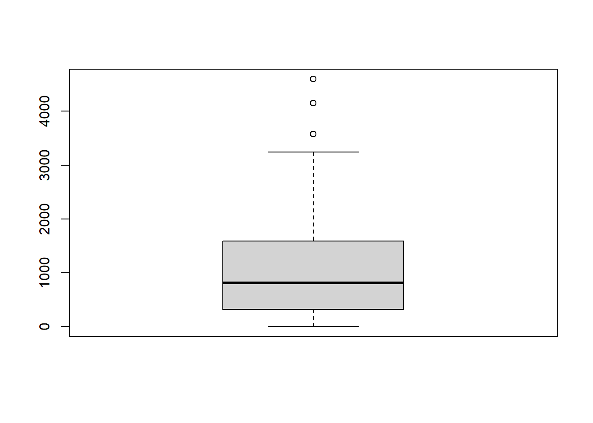
[1] 3577.418 4596.327 4146.954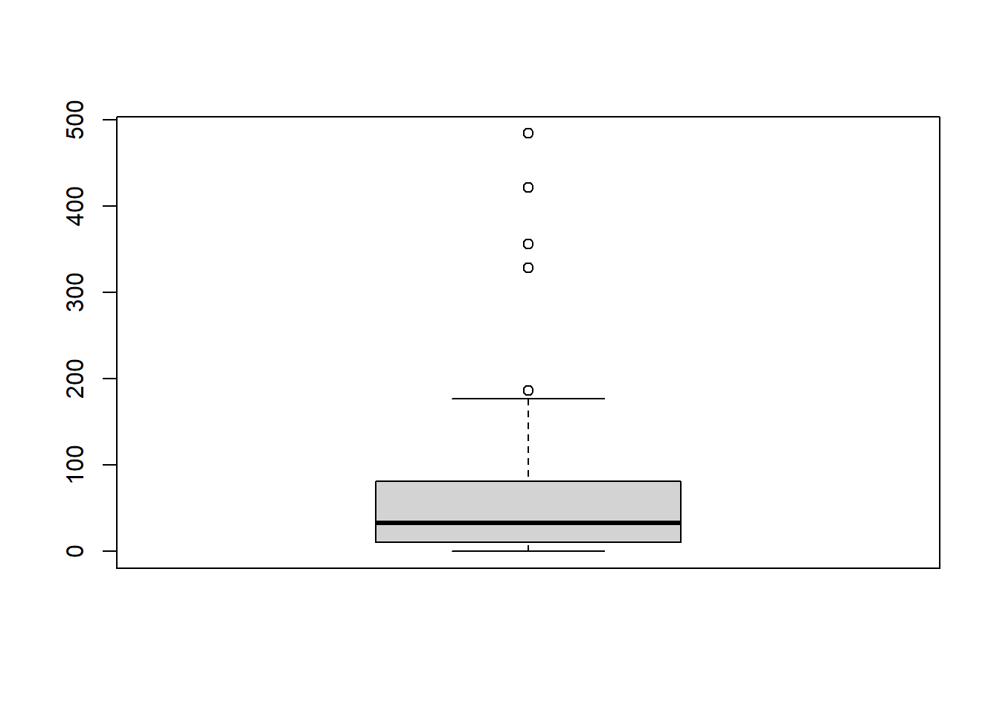
[1] 355.4485 327.8714 421.3698 186.6312 483.7464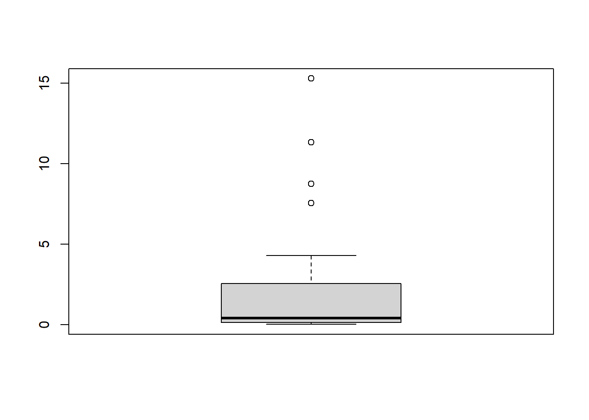
[1] 8.747739 7.555556 11.323077 15.277567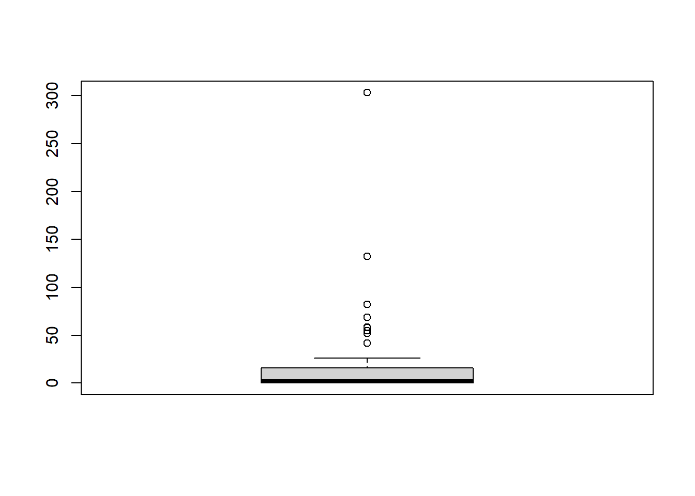
[1] 303.25845 82.28342 41.86521 68.75510 58.58462 51.75318 132.14518
[8] 57.79439 54.91643df_preterm_ls_final <- do.call(rbind, df_preterm_ls)df_long <- rbind(df_term_ls_final, df_preterm_ls_final)
dim(df_long)[1] 291 5dim(df_long_ori)[1] 252 5df_long$value <- log(df_long$value+0.001)
gsub(pattern = "_stool",
replacement = "",
df_long$SCFA) -> df_long$SCFAfit_acetate <- lm(acetate_stool ~ Gestation,
data = df_reg_stool)
summary(fit_acetate)
Call:
lm(formula = acetate_stool ~ Gestation, data = df_reg_stool)
Residuals:
Min 1Q Median 3Q Max
-1098.8 -643.4 -294.2 411.6 3504.2
Coefficients:
Estimate Std. Error t value Pr(>|t|)
(Intercept) 1186.46 787.63 1.506 0.136
Gestation -3.37 23.03 -0.146 0.884
Residual standard error: 999.3 on 79 degrees of freedom
(7 observations deleted due to missingness)
Multiple R-squared: 0.0002711, Adjusted R-squared: -0.01238
F-statistic: 0.02142 on 1 and 79 DF, p-value: 0.884fit_propionate <- lm(propionate_stool ~ Gestation,
data = df_reg_stool)
summary(fit_propionate)
Call:
lm(formula = propionate_stool ~ Gestation, data = df_reg_stool)
Residuals:
Min 1Q Median 3Q Max
-68.57 -54.72 -35.55 10.83 415.47
Coefficients:
Estimate Std. Error t value Pr(>|t|)
(Intercept) 72.2194 78.9474 0.915 0.363
Gestation -0.1273 2.3080 -0.055 0.956
Residual standard error: 100.2 on 79 degrees of freedom
(7 observations deleted due to missingness)
Multiple R-squared: 3.853e-05, Adjusted R-squared: -0.01262
F-statistic: 0.003044 on 1 and 79 DF, p-value: 0.9561fit_isobutyrate <- lm(isobutyrate_stool ~ Gestation,
data = df_reg_stool)
summary(fit_isobutyrate)
Call:
lm(formula = isobutyrate_stool ~ Gestation, data = df_reg_stool)
Residuals:
Min 1Q Median 3Q Max
-13.040 -8.564 -0.936 1.333 76.697
Coefficients:
Estimate Std. Error t value Pr(>|t|)
(Intercept) -28.2092 11.0943 -2.543 0.01295 *
Gestation 1.0069 0.3243 3.104 0.00265 **
---
Signif. codes: 0 '***' 0.001 '**' 0.01 '*' 0.05 '.' 0.1 ' ' 1
Residual standard error: 14.08 on 79 degrees of freedom
(7 observations deleted due to missingness)
Multiple R-squared: 0.1087, Adjusted R-squared: 0.09745
F-statistic: 9.637 on 1 and 79 DF, p-value: 0.002646fit_butyrate <- lm(butyrate_stool ~ Gestation,
data = df_reg_stool)
summary(fit_butyrate)
Call:
lm(formula = butyrate_stool ~ Gestation, data = df_reg_stool)
Residuals:
Min 1Q Median 3Q Max
-56.08 -36.21 -20.75 -3.61 761.28
Coefficients:
Estimate Std. Error t value Pr(>|t|)
(Intercept) -63.598 77.180 -0.824 0.412
Gestation 2.920 2.256 1.294 0.199
Residual standard error: 97.92 on 79 degrees of freedom
(7 observations deleted due to missingness)
Multiple R-squared: 0.02076, Adjusted R-squared: 0.008369
F-statistic: 1.675 on 1 and 79 DF, p-value: 0.1993library(ggplot2)
ggplot(data = df_long,
mapping = aes(x = Gestation,
y = value)) +
geom_point(alpha = 0.5) +
geom_smooth(method = "lm") +
facet_wrap(~ SCFA,
scale = "free") +
theme_bw(base_size = 16) +
theme(legend.position = "none") +
labs(x = "Gestation (week)",
y = "log \u03bcM/g",
title = "Stool") +
coord_cartesian(clip = "off")`geom_smooth()` using formula = 'y ~ x'
ggsave(filename = "FIGURE_10_GESTATION_STOOL.svg",
width = 8,
height = 6,
dpi = 300,
units = "in")`geom_smooth()` using formula = 'y ~ x'